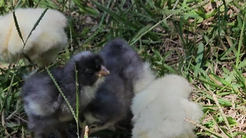

Publicación 1
Bienvenida
La vida real de la granja y una invitación a acompañar el proyecto.
Selección editorial real · textos completos en facebook-launch-ready.md
La vida real de la granja y una invitación a acompañar el proyecto.

Cercanía, personalidad y conversación con la comunidad.

Un hito pequeño que cuenta el proceso completo.

Trabajo cotidiano, observación y mejora progresiva.

19,5 segundos, H.264, sin audio y sin ubicación.